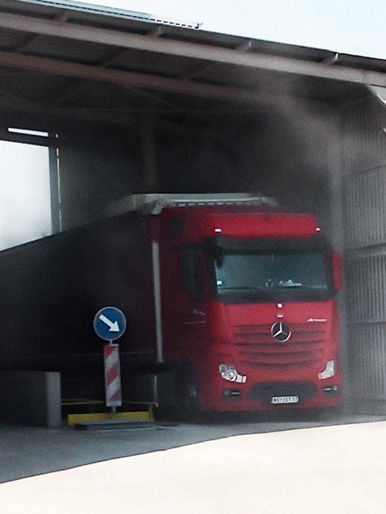
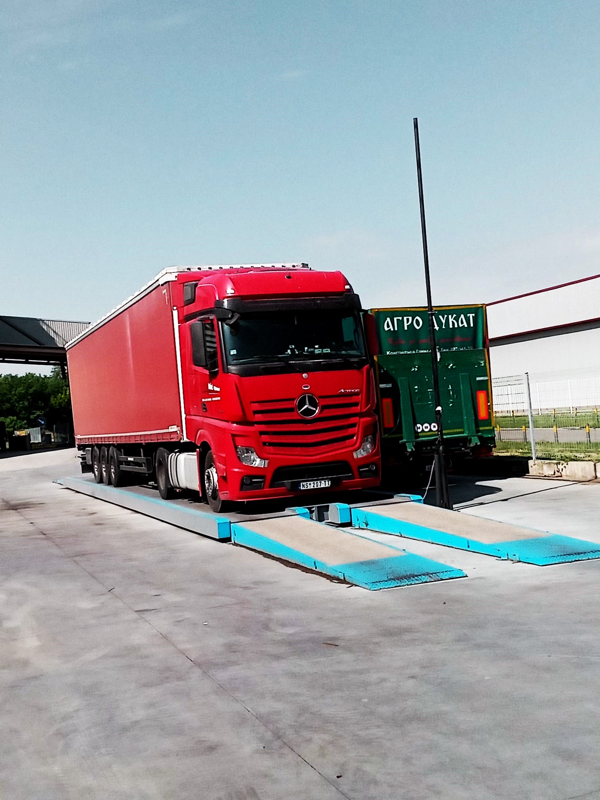
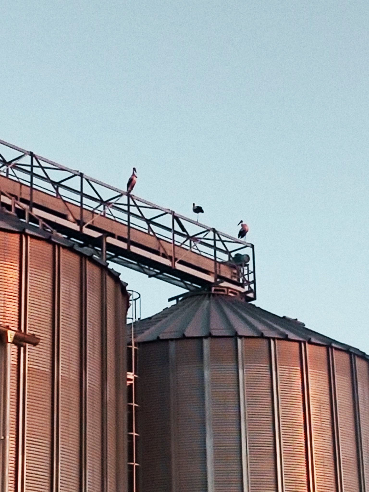
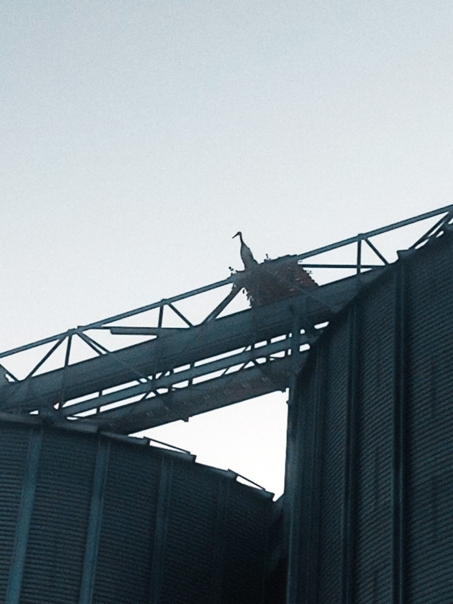

КОМЕРЦИЈАЛА: Мирко Шокшић 064-4372882
ОТКУПНА МЕСТА:
- 1. Зрењанин, Константина Данила 38, контакт: Владимир Чудић 064-5947639
- 2. Орловат, Жарка Зрењанина 40, контакт: Зоран Живанов 064-2597624
- 3. Тараш, Иве Лоле Рибара 18, контакт: Марјан Бодо 060-5405998




ОТКУП ПШЕНИЦЕ РОД 2022
Напомена: сву документацију је потребно доставити на откупно место.
Приликом примопредаје робе на откупном месту од документације је потребно доставити следеће:
1. Потврда о активном статусу пољопривредног газдинства.
2. Очитана лична карта власника пољопривредног газдинства.
3. Копија платне картице газдинства на који текући рачун треба извршити плаћање.
За газдинства која су у ПДВ-у потребно је следеће:
1. Потврда о активном статусу пољопривредног газдинства.
2. Очитана лична карта власника пољопривредног газдинства.
3. Копија платне картице газдинства на који текући рачун треба извршити плаћање.
4. Потврда о активном статусу у ПДВ-у која се добија приликом приступања у ПДВ.
5. ПГ у ПДВ-у, правилно попуњена отпремница за робу